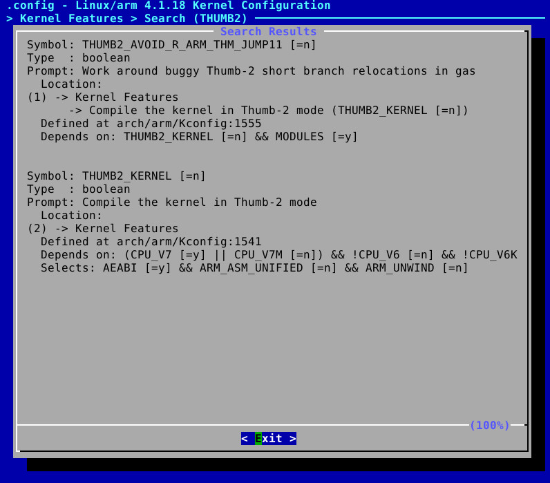

Linux Device Driver
解決"unknown relocation: 10"問題
司徒遇到的問題如下：
# insmod test.ko [ 7.175590] hello: unknown relocation: 10 [ 7.206189] hello: unknown relocation: 10 insmod: can't insert 'test.ko': invalid module format
定位到位置在：arch/arm/kernel/module.c
263 default:
264 pr_err("%s: unknown relocation: %u\n",
265 module->name, ELF32_R_TYPE(rel->r_info));
266 return -ENOEXEC;
267 }
268 }
269 return 0;
270 }
發現10的定義值如下：
#define R_ARM_THM_CALL 10
往回找一下，發現在同一段
160 #ifdef CONFIG_THUMB2_KERNEL 161 case R_ARM_THM_CALL: 162 case R_ARM_THM_JUMP24:
THUMB2沒有被Enable

Enable後，再度編譯Kernel，出現很多編譯問題...
最後，司徒發現原來是export問題，原本的的export如下：
export ARCH=arm
export CROSS=arm-linux-gnueabihf-
export CC=${CROSS}gcc
export LD=${CROSS}ld
export AS=${CROSS}as
export CXX=${CROSS}g++
改成如下即可解決unknown relocation: 10的問題
export ARCH=arm export CROSS_COMPILE=arm-linux-gnueabihf-